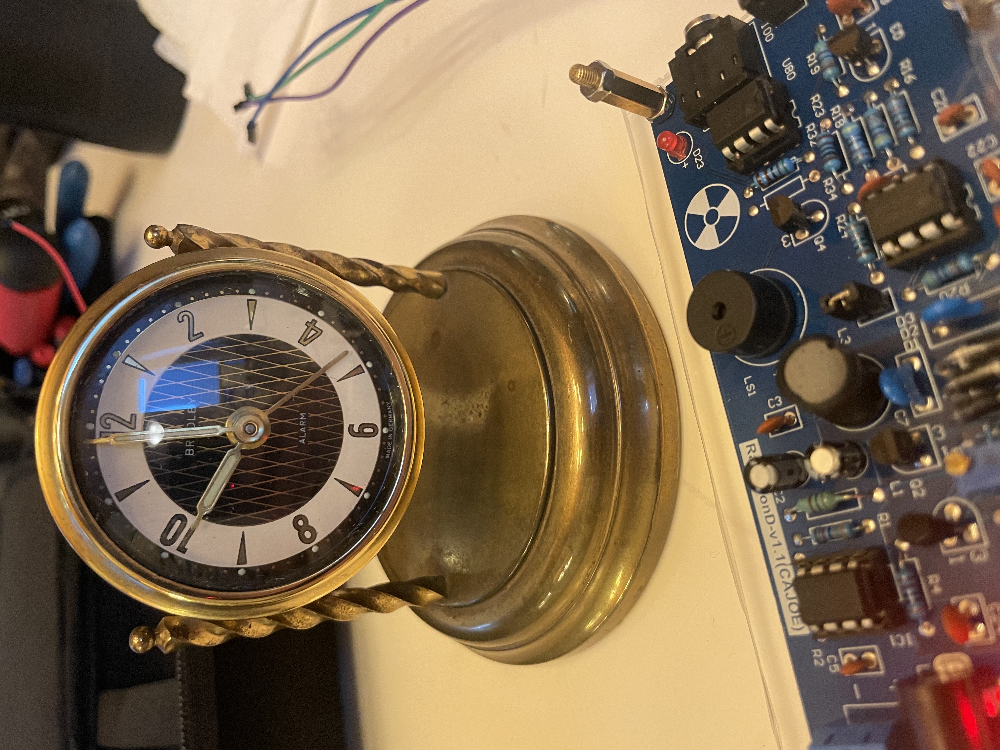

📅
Era
1955
📍
Origin
West Germany
☢️
Activity
75 CPM
💰
Acquired
$20

Radiation Measurements
Background Reading:
13 CPM
Clock Face @ Contact:
~75 CPM ⚠️
Activity Level:
5.8x Background
Safety Status:
ACTIVE - Handle with care
Specimen Details
Manufacturing Information
- Manufacturer
- Bradley Time Division
- Country
- West Germany
- Model Year
- Circa 1955
- Movement
- Mechanical Wind-up
Radioactive Components
✓ Radium-226 luminous paint confirmed on hands
✓ Visible glow in darkness after 70+ years
Acquisition Details
- Source
- St. Paul, MN Antique Shop
- Location
- 3338 University Ave SE, Minneapolis
- Price
- $20 USD
- Catalogued
- July 13, 2025
Curator's Notes
"This Bradley timepiece represents the peak era of radium dial production in post-war Germany. The sustained radioactivity after nearly 70 years demonstrates the enduring hazard of radium-226. Of particular note is the quality of the luminous application—still visibly glowing in darkness, a testament to both German craftsmanship and the permanent danger these artifacts pose."
— Dr. R. Sanchez, Tangnet Field Science Lab
⚠️ Handling & Safety Protocols
Required Precautions
- ▸ Never open case or disturb dial
- ▸ Store in ventilated area (radon gas emission)
- ▸ Limit handling time to under 5 minutes
- ▸ Maintain minimum 1-meter distance when not examining
Storage Requirements
- ▸ Sealed display case with lead glass preferred
- ▸ Away from living/sleeping areas
- ▸ Document any paint flaking immediately
- ▸ Annual radiation level monitoring recommended